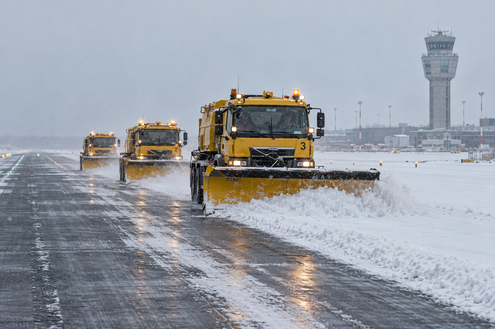
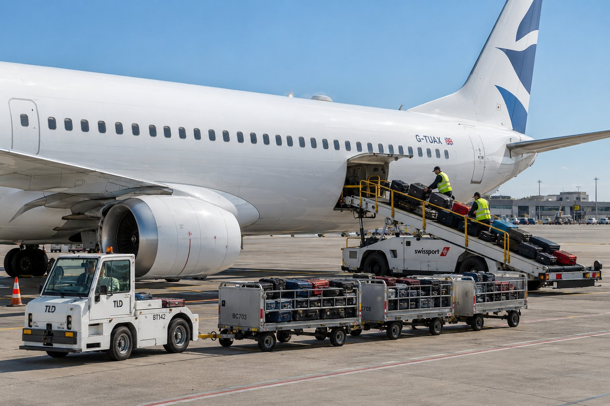

This is the whole test, start to finish, in the same order and on the same clocks as the real one. Work through the tabs from left to right. Sit as you would in the exam, speak aloud, and do not pause the timers.
Section
What you do
The clock
1 · Interview
Six questions about you and your work, in two parts of three.
60 seconds per question
2 · Radio dialogues
Ten recordings. Two questions each, three options.
15 seconds per question · one replay per recording
3 · Photos
Five photographs. Choose the two true statements from six.
45 seconds per photo
4 · Summaries
Part 1: a written report, then five key words. Part 2: a radio exchange.
90 s read · 90 s speak · 45 s speak
How it is marked: Sections 2 and 3 are scored by the page. Sections 1 and 4 you rate yourself at the end. In every section, up to 4 errors is a pass, 2 or fewer is Level 5, and 0 is Level 6. Your final level is your weakest section.
Before you start:
Use headphones and a quiet room. Sound is needed for Sections 2 and 4.
Have paper and a pen for notes.
Press Listen only when you are ready. You can listen twice: once, plus one replay.
If you do not understand a question in Section 1, say: Could you repeat the question, please? Use it once at most.
When you are ready, open 1 · Interview.
Section 1 — Interview
Six questions, 60 seconds each. Speak for the whole minute. Start the timer, answer aloud, and move on when it stops.
Part A
Question 1. Tell me about the work you do now, or the work you would like to do.
01:00
Question 2. Describe a normal working day.
01:00
Question 3. What do you like most about working in aviation, and what is difficult?
01:00
Part B
Question 4. Describe a time when you had to deal with a problem or a mistake at work. What happened and what did you do?
01:00
Question 5. Why is clear communication so important for safety at an airport?
01:00
Question 6. What should you do if you do not understand a message on the radio, and why?
01:00
Rate your Section 1
Overall, I would give this section:
Section 2 — Ten radio dialogues
Press Listen for each recording. Read the two questions before you listen if you wish. For each question, press Start 15 s, choose your answer, and it locks when the time ends. An empty answer scores nothing.
Recording 1
GND: Corvus 3 8 4, taxi to holding point runway 0 9 via taxiway Alpha and Bravo, QNH 1 0 1 7. P: Taxi to holding point runway 0 9 via Alpha and Bravo, QNH 1 0 1 7, Corvus 3 8 4. GND: Corvus 3 8 4, hold short of taxiway Bravo, a vehicle is crossing. P: Holding short of Bravo, Corvus 3 8 4. GND: Corvus 3 8 4, vehicle clear, continue taxi. P: Continuing taxi, Corvus 3 8 4.
1.1 Which route does the pilot take to the holding point?
00:15
1.2 Why does the pilot stop at Bravo?
00:15
Recording 2
P: Tower, Brisa 5 6 1, final runway 2 7. TWR: Brisa 5 6 1, wind 2 8 0 degrees, 2 2 knots, gusting 3 4 knots, runway 2 7, cleared to land. P: Cleared to land runway 2 7, Brisa 5 6 1. TWR: Brisa 5 6 1, go around, I say again, go around, a vehicle is on the runway. P: Going around, Brisa 5 6 1.
2.1 What is the strongest wind gust reported?
00:15
2.2 What does the controller order the pilot to do?
P: Pan pan, pan pan, pan pan. Tower, Alder 8 1 4, we have hit birds on departure, the left engine is vibrating, request return to the airport. TWR: Alder 8 1 4, Tower, roger, how many persons on board? P: 1 1 2 persons on board, fuel for 2 hours, we will keep the engine at idle. TWR: Alder 8 1 4, runway 2 7, wind calm, cleared to land, emergency services are standing by. P: Cleared to land runway 2 7, Alder 8 1 4.
5.1 What caused the problem?
00:15
5.2 How many people are on board?
00:15
Recording 6
TWR: Kestrel 6 0 2, wind 3 6 0 degrees, 1 5 knots, visibility 8 0 0 metres in fog, runway visual range 6 0 0 metres. P: Tower, Kestrel 6 0 2, that is below our minimum, we will divert to our alternate. TWR: Kestrel 6 0 2, roger, report your intentions when ready. P: Request climb to 4,000 feet and heading for Lakemouth, Kestrel 6 0 2. TWR: Climb 4,000 feet, turn right heading 0 9 0, Kestrel 6 0 2.
6.1 What is the runway visual range?
00:15
6.2 What does the pilot decide to do?
00:15
Recording 7
TWR: All stations, runway 0 9 wet, braking action medium to poor, patches of ice near the threshold. P1: Tower, Delta 4 4 6, request different runway. TWR: Delta 4 4 6, runway 1 8 available, wind 1 8 0 degrees, 1 0 knots, braking action good. P1: Runway 1 8, Delta 4 4 6, we will be ready in 5 minutes. TWR: Delta 4 4 6, roger, expect runway 1 8.
7.1 What is the braking action on runway 09?
00:15
7.2 Which runway will Delta 446 use?
00:15
Recording 8
P: Tower, Sable 3 0 5, request priority landing, we have a medical emergency, a passenger is unconscious. TWR: Sable 3 0 5, understood, are you declaring an emergency? P: Negative, not an emergency at this time, but we need priority. We are 2 5 minutes from the field. TWR: Sable 3 0 5, priority approved, an ambulance will meet the aircraft at the stand. P: Thank you, Sable 3 0 5.
8.1 How far is the aircraft from the airport?
00:15
8.2 Who will meet the aircraft?
00:15
Recording 9
P: Ground, Orion 1 5 3, ready to taxi. GND: Orion 1 5 3, hold position, a runway inspection is in progress. P: Orion 1 5 3, how long is the delay? GND: Orion 1 5 3, expect a delay of 1 5 minutes, I will call you. P: Holding position, Orion 1 5 3, we will wait.
9.1 What is the reason for the delay?
00:15
9.2 How long is the delay?
00:15
Recording 10
TWR: Sable 9 4 6, line up and wait runway 3 6. P1: Line up and wait runway 3 6, Sable 9 4 6. P2: Tower, Falcon 2 2 8, 3 miles final runway 3 6. TWR: Falcon 2 2 8, continue approach, expect late landing clearance. TWR: Falcon 2 2 8, go around, I say again, go around, an aircraft is still on the runway. P2: Going around, Falcon 2 2 8. TWR: Sable 9 4 6, we apologise, the take-off clearance will be delayed.
10.1 Which aircraft must go around?
00:15
10.2 Why must it go around?
00:15
Section 3 — Five photographs
Each photograph has six statements and exactly two are true. You have 45 seconds per photo. Choose two, then lock, or let the timer lock for you.
Photo 1 of 5
00:45
Three crew — HOW MANY: there are two. Pushed back — WHAT STAGE: the aircraft is parked and being refuelled, with steps attached. Passengers walking — NOT IN THE PICTURE: nobody but the two crew is visible. In front of the nose — WHERE: the truck is beside the wing, not ahead of the aircraft.
Photo 2 of 5

00:45
Four ploughs — HOW MANY: there are three. Aircraft waiting — NOT IN THE PICTURE: there is no aircraft anywhere. Lights switched off — WHAT STATE: the headlights and orange beacons are on. Tower hidden — the tower is clearly visible on the right.
Photo 3 of 5

00:45
Four carts — HOW MANY: there are three. Door closed — WHAT STATE: the cargo door is open and the conveyor reaches it. Fuel truck — NOT IN THE PICTURE: there is none. In front of the nose — WHERE: the tug is beside the engine, well behind the nose.
Photo 4 of 5
00:45
Behind the aircraft — WHERE: the vehicle is in front, leading. Parked at the stand — WHAT STAGE: it is moving along a taxiway. Four engines — HOW MANY: it has two. Completely dark — WHAT STATE: the sky is orange and the taxiway has blue lights.
Photo 5 of 5
00:45
Ground crew loading — NOT IN THE PICTURE: no people or vehicles are visible. Dry apron — WHAT STATE: the surface is wet and reflects the lights. Clear sky — WHAT STATE: the sky is full of dark storm cloud. Refuelling truck — NOT IN THE PICTURE.
Section 4 — Two summaries
Part 1 — Report and key words
You will see a report for 90 seconds. Make notes on paper. Then it disappears and five key words appear. Summarise the report aloud for 90 seconds, using all five key words exactly as written.
01:30
At 14:20 a fuel truck driver noticed fuel dripping from a valve while refuelling a regional aircraft. He stopped the pump at once and informed the apron supervisor. The fire service arrived within three minutes and covered the spill with foam. However, the departure was delayed by forty minutes because the aircraft had to be inspected. Passengers were told the reason and nobody was injured. The valve was replaced the same evening.
noticedsupervisorfoamhoweverinspected
01:30
At 14:20 a driver noticed fuel dripping from a valve while he was refuelling a regional aircraft. He stopped the pump and told the apron supervisor. The fire service arrived within three minutes and covered the spill with foam. However, the departure was delayed by forty minutes because the aircraft had to be inspected. Passengers were told the reason and nobody was hurt. The valve was replaced that evening.
Part 2 — Radio summary
Listen to a radio exchange of about two minutes. It begins as a routine situation and then something unexpected happens. Take notes. You can listen twice. Then summarise what happened in 45 seconds.
TWR: Alder 4 1 0, line up and wait runway 0 9. P: Line up and wait runway 0 9, Alder 4 1 0. TWR: Alder 4 1 0, wind 0 9 0 degrees, 8 knots, runway 0 9, cleared for take-off. P: Cleared for take-off runway 0 9, Alder 4 1 0. TWR: Alder 4 1 0, airborne 1 4 3 2, contact Departure 1 2 0 decimal 6. P: Departure 1 2 0 decimal 6, Alder 4 1 0. P: Tower, Alder 4 1 0, before we leave your frequency, the crew can smell smoke in the cabin. Request immediate return. TWR: Alder 4 1 0, roger, turn right heading 2 7 0, descend 3,000 feet, runway 0 9 available. Do you wish to declare an emergency? P: Affirm, Mayday, Mayday, Mayday, Alder 4 1 0, smoke in the cabin, 8 7 persons on board, returning. TWR: Alder 4 1 0, Mayday received, the fire service is standing by, cleared to land runway 0 9, wind 0 9 0 degrees, 8 knots. P: Cleared to land runway 0 9, Alder 4 1 0. TWR: All stations, runway 0 9 is closed for an emergency landing, expect 2 0 minutes delay. Alder 4 1 0, cleared to land. P: Tower, Alder 4 1 0, on the ground, the fire service has found no fire. The smoke came from an overheated cabin fan. TWR: Alder 4 1 0, roger, vacate right and stop on taxiway Bravo, passengers will leave the aircraft there. P: Vacate right, stop on Bravo, Alder 4 1 0.
00:45
Alder 410 took off normally from runway 09. Just after take-off the crew reported smoke in the cabin and asked to return. The controller asked if they wanted to declare an emergency and the pilot declared Mayday, with 87 people on board. The fire service stood by, the runway was closed for the emergency landing, and the aircraft landed safely. Unexpectedly, the fire service found no fire: the smoke came from an overheated cabin fan.
Rate your Section 4
Overall, I would give this section:
Results
Sections 2 and 3 come from the page. Sections 1 and 4 come from your own rating.
Section
Errors
Result
What to look at next
Section 2 errors: open the script of each recording you missed and find the exact word that gave the answer: a number, a correction, a reason.
Section 3 errors: for each missed photo, open Why the others are wrong and find the single detail that made each false statement fail.
Sections 1 and 4: record yourself once more on the question or summary where you stopped early.